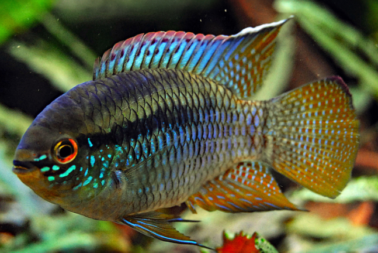
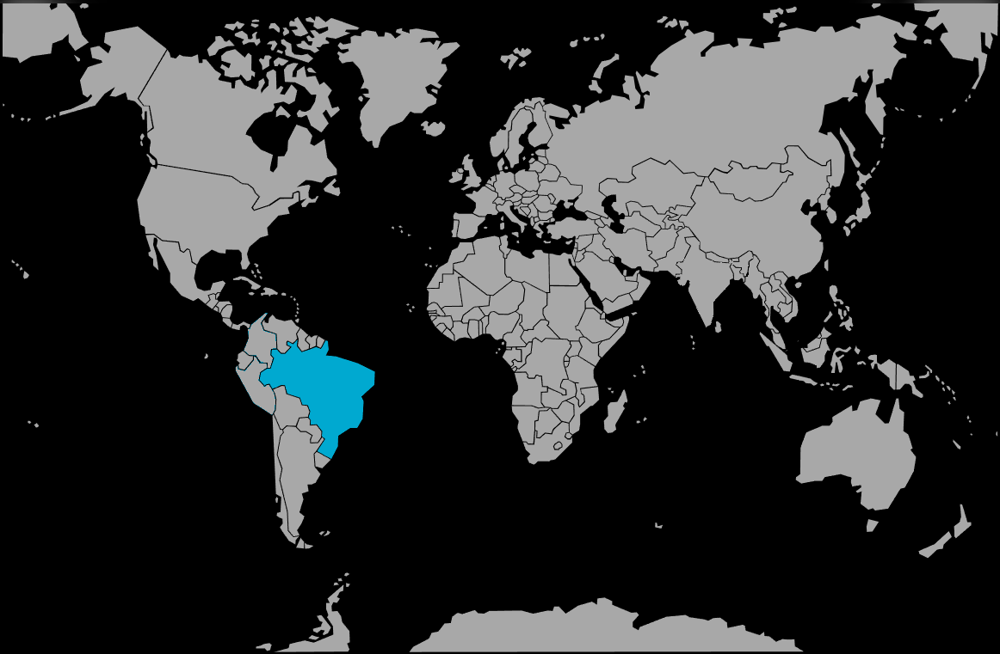

Systématique
- Ordre : Cichliformes
- Famille : Cichlidae
- Genre : Laetacara
- Espèce : L. curviceps

Laetacara curviceps, souvent appelé Cichlidé drapeau ou Acara drapeau, est un cichlidé nain sud-américain très populaire. Son nom de genre Laetacara signifie "Acara souriant", en référence aux marques faciales autour de sa bouche qui lui donnent une expression sympathique.
Il mesure adulte entre 7 et 9 cm pour les mâles, les femelles restant légèrement plus petites (6-7 cm). Son corps est ovale et comprimé latéralement. Sa coloration de base est gris-vert à bleuâtre, avec des reflets métalliques. Une ligne sombre longitudinale traverse parfois le corps. La nageoire dorsale présente souvent une tache noire à sa base.
C'est l'un des cichlidés les plus paisibles et timides, idéal pour débuter avec cette famille en aquarium communautaire calme.
C'est un poisson vivant en couple qui établit des liens solides. Contrairement à beaucoup de cichlidés, il est très peu agressif, sauf en période de reproduction où il défend son territoire (généralement une pierre ou une plante) avec détermination mais sans violence excessive.
Il occupe la zone inférieure et médiane de l'aquarium. Il apprécie les bacs plantés offrant de nombreuses cachettes (racines, noix de coco) pour se rassurer. S'il est maintenu avec des espèces trop vives ou agressives, il restera caché et perdra ses couleurs.
Mode : ovipare (pondeur sur substrat découvert).
Le couple nettoie soigneusement une surface plane (pierre plate, large feuille d'Anubias ou d'Echinodorus) pour y déposer ses œufs.
C'est une espèce biparentale : les deux parents s'occupent de la ponte et ventilent les œufs à tour de rôle. Après l'éclosion, ils déplacent souvent les larves dans de petites cuvettes creusées dans le sable. Les alevins sont surveillés étroitement par les parents pendant plusieurs semaines.
Dimorphisme sexuel : Assez subtil. Le mâle est généralement un peu plus grand, plus coloré (davantage de reflets bleus/verts) et ses nageoires dorsale et anale sont plus effilées (pointues) à l'extrémité. La femelle est plus petite, plus ronde, et sa nageoire dorsale est souvent plus arrondie.
Espérance de vie : Environ 4 à 5 ans en captivité.
Il est originaire du bassin inférieur de l'Amazone au Brésil. Il fréquente les eaux calmes, les criques ombragées, les zones marécageuses et les plaines inondables riches en végétation aquatique et en bois mort en décomposition.
Répartition

Origine naturelle :
- Amérique du Sud.
- Brésil (Bassin inférieur de l'Amazone).
- Bassin du Rio Tapajós.
Paramètres de maintenance
Température : 24 à 28 °C.
pH : 5,5 à 7,0 (préfère une eau légèrement acide et douce).
GH : 3 à 12 °dGH.
Volume conseillé : Minimum 80 à 100 L pour un couple. Un bac de 80 cm de façade est recommandé. Une cohabitation est possible avec des bancs de petits Characidés (tétras) qui serviront de poissons "rassurants" (dither fish).
Régime alimentaire
Régime : omnivore / micro-prédateur.
Dans la nature, il se nourrit de petits insectes, de larves et de crustacés.
En aquarium, il n'est pas difficile mais nécessite une nourriture de qualité. Granulés pour cichlidés nains, et apports réguliers de nourriture vivante ou congelée (artémias, daphnies, vers de vase) sont essentiels pour sa santé et ses couleurs.